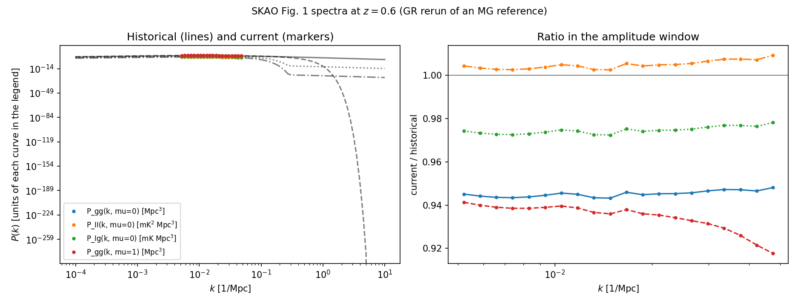
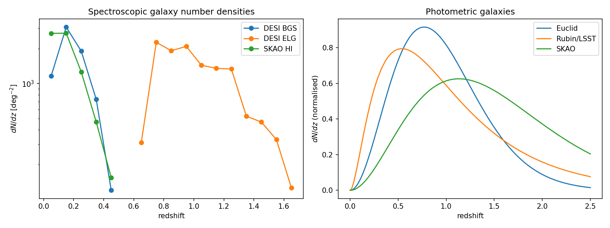
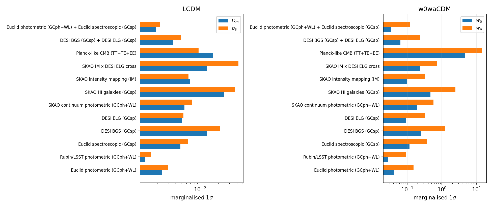
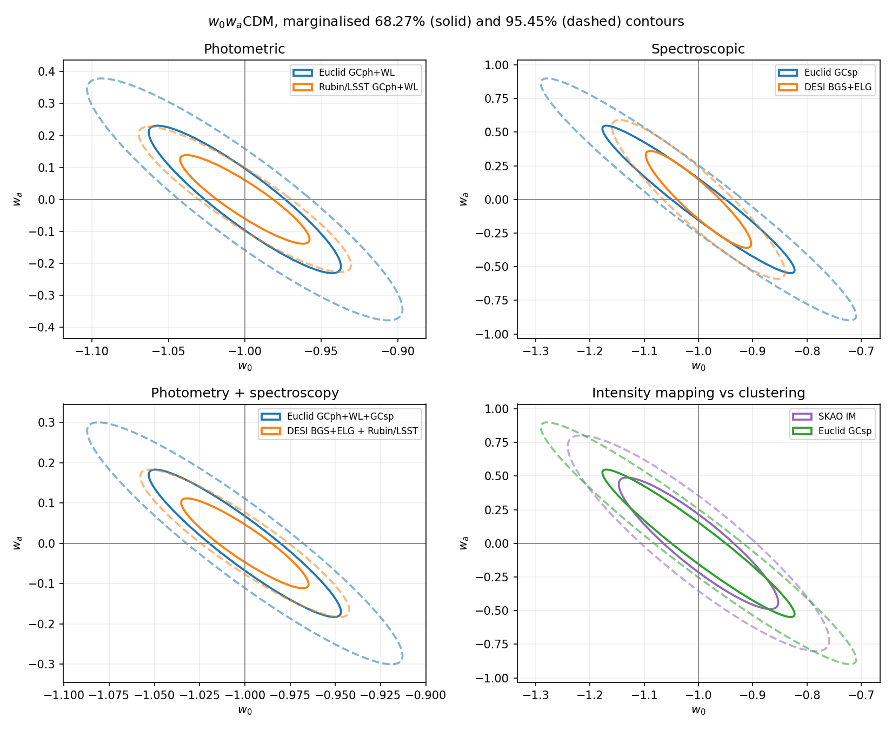
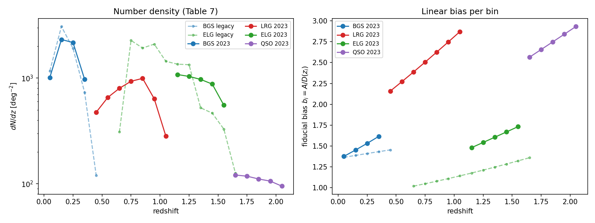
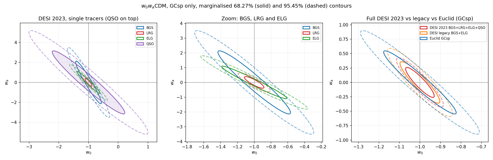

Survey validation: DESI, Rubin/LSST, SKAO and Planck#
cosmicjellyfish was built and validated for the Euclid forecast recipe. This page
documents a second, deliberately conservative validation: the same machinery is applied to
the other major Stage-IV surveys, and the result is checked in two independent ways.
First, every survey-specific ingredient (number density, bias, volume, photometric
redshift distribution, intensity-mapping thermodynamics, beam and noise) is compared
against an independent transcription of the historical SKAO forecast project of
Casas et al. (2023). Second, the probes are run through the Fisher pipeline on a common
GR fiducial and the marginalised errors are compared across surveys. The accompanying
engineering tracker, with the full provenance map, per-step checklists and progress log,
lives in docs/SURVEY_VALIDATION_ROADMAP.md.
The scope is intentionally narrow. The published SKAO constraints are on modified-gravity
parameters (mu, Sigma, E11, E22), which are not part of this validation, so the
numbers below are not a reproduction of the paper’s headline results. What is reproduced
is the measurement side of the forecast and the Fisher machinery on top of it.
Survey configurations#
The historical inputs are shipped as opt-in files under
cosmicjellyfish/configs/other_survey_specifications/. They are named with the
-SKAOPaper suffix so that they can never be confused with a current-best
specification, and they do not change any default.
File |
Survey |
Probe |
Main settings |
|---|---|---|---|
|
DESI BGS |
GCsp |
5 bins, |
|
DESI ELG |
GCsp |
11 bins, |
|
DESI BGS |
GCsp |
4 bins, |
|
DESI LRG |
GCsp |
7 bins, |
|
DESI ELG (LOP) |
GCsp |
5 bins, |
|
DESI quasars |
GCsp |
5 bins, |
|
Rubin/LSST |
GCph + WL |
10 bins, |
|
SKAO |
GCph + WL |
10 bins, |
|
SKAO |
GCsp (HI galaxies) |
5 bins, |
|
SKAO |
IM |
11 bins aligned to DESI ELG for the cross-correlation |
The DESI and Rubin branches of the configuration loader do not pick a file on their own, so the survey name must be combined with an explicit specification name:
from cosmicjellyfish.fishermatrix.cosmicfish import FisherMatrix
desi = FisherMatrix(
options={"code": "symbolic", "survey_name_spectro": "DESI-ELG-SKAOPaper"},
observables=["GCsp"],
surveyName="DESI",
)
rubin = FisherMatrix(
options={"code": "symbolic", "survey_name_photo": "Rubin-Photometric-SKAOPaper"},
observables=["GCph", "WL"],
surveyName="Rubin",
)
Reproducing the study#
The commands below produce everything on this page. The first two write JSON reports
under results/survey_validation/; the last turns them into figures.
uv run python scripts/validation/validate_survey_observables.py
uv run python scripts/validation/run_survey_forecasts.py --model LCDM
uv run python scripts/validation/run_survey_forecasts.py --model w0waCDM
uv run python scripts/validation/plot_survey_validation.py
The observable harness takes a few seconds, the LCDM forecast set about two minutes and
the w0waCDM set about three. validate_survey_observables.py needs a local checkout of
the historical project: set COSMICFISH_HISTORICAL_DIR to that directory (it must contain
survey_specifications/ and data-for-fig1.dat).
Observable validation#
scripts/validation/survey_observable_reference.py re-implements the historical
formulas from scratch rather than importing them, so that agreement is a real check
rather than a tautology. The harness compares, for every migrated configuration:
the bin number density, survey volume and fiducial bias;
the full galaxy power spectrum
P_gg(k, mu, z), including the AP remapping, the Kaiser term, the de-wiggled power and the Lorentzian damping;for intensity mapping:
Omega_HI(z),b_HI(z), the brightness temperature, the beam and the thermal noise power, as well as theP_IIandP_Igspectra;for the photometric surveys: the
dN/dzshape and the galaxy counts per bin. The angular kernels and spectra are not re-compared against the historical project here; they are exercised by the existing photometric observable tests, so this harness alone should not be read as a photometric-spectra validation.
These are primarily algebra checks. The reference implementation is written independently and shares only the cosmology object with the code under test, so agreement confirms that the transcribed formulas, units and bin bookkeeping are correct, not that a different cosmology library would give the same answer.
The 33 machinery checks agree at machine precision (relative differences below
1e-15). The only deliberate exception is the SKAO paper’s Fig. 1: its reference curves
were computed with a modified-gravity fiducial and the external MGCAMB tables, so the
current GR run is expected to differ. Recomputing the same spectra at z = 0.6 gives a
residual shape difference of 0.4–1.5% over 0.005 < k < 0.05 1/Mpc, and a constant
0.5–6.8% amplitude offset. The shape agreement is what this diagnostic supports; the
amplitude offset is consistent with the different fiducial growth, but it is not isolated
from the other differences (backend, table extrapolation, modelling), so the figure is
recorded as “quantified”, not “reproduced”.


Forecast comparison#
All runs use the same GR fiducial (Omegam = 0.32, Omegab = 0.05, h = 0.67,
ns = 0.96, sigma8 = 0.822, with mnu = 0.06 eV held fixed and not varied), flat
LCDM, the 3PT derivative scheme with 0.2% relative steps and the same k/mu
sampling. The step is smaller
than the 1% used for the photometric runs because every three-dimensional clustering
analysis is under-converged at 1%: relative to their own error bar, sigma(sigma8) grows
by 25% (Euclid GCsp), 37% (DESI ELG), 38% (SKAO HI) and 20% (SKAO IM) when going from 1%
to 0.2%, while 0.2% and 0.05% agree to better than 0.1%. The photometric errors change by
only 0.03% between 1% and 0.2%. Bias, shot-noise and (where
present) sigma_v/sigma_p nuisances are marginalised before the errors are quoted.
Everything runs on the symbolic backend except the Planck-like case, which uses CAMB.
Combinations sum the full nuisance-marginalised Fisher blocks of the two probes, so the
parameter correlations between the probes’ contributions are retained; the harness refuses
to combine a report that does not store those blocks rather than falling back to the
diagonal errors. The “IM x ELG” rows with the cross-spectrum only use
observables=["GCspxIM"]; the “auto + cross” rows analyse the DESI ELG auto-spectrum, the
IM auto-spectrum and their cross-spectrum together (see the next paragraph).
The spectroscopic observables are GCsp (galaxy auto-spectrum), IM (intensity-mapping
auto-spectrum) and GCspxIM (their cross-spectrum). The old spelling ["GCsp", "IM"] meant
the cross-spectrum only; it still works and emits a FutureWarning. To analyse all three
spectra at once, list them (["GCsp", "GCspxIM", "IM"]) or pass GCspxIM together with the
option spectro_joint=True. In that joint mode the galaxy and IM fields at each
(k, mu) are treated as a pair with a full 2x2 Gaussian covariance, so the modes they share
are counted once instead of adding three Fisher matrices by hand. The joint analysis lives
on the redshift bins where both probes overlap, needs the standard finite-difference
derivatives (the JAX providers do not support it) and the shot-noise parameters Ps_i
enter the galaxy auto-spectrum only.
For intensity mapping the survey volume uses the IM sky fraction (fsky_IM = 0.48),
matching the footprint already used by the 21-cm noise term. For the cross-spectrum the
sky fraction can be set explicitly with the optional fsky_cross key; when it is absent
the code uses the smaller of fsky_spectro and fsky_IM, which assumes the smaller
footprint is fully contained in the larger one. The migrated specifications do not set
fsky_cross, so their cross-spectrum volume carries that nested-footprint assumption; the
code records it in SpectroCov.fsky_cross_assumed_nested and rejects an explicit
fsky_cross larger than the nested value. The IM k range is inherited
from the galaxy-clustering settings (kmin_GCsp, kmax_GCsp), as in the historical
project: the kmin_IM/kmax_IM entries of the specification are currently not consumed
and are recorded as an open item in the roadmap.
The two figures below summarise the survey inputs and the parameter errors. The tables that follow give the numbers.




LCDM#
Survey |
Probe(s) |
sigma(Omegam) |
sigma(Omegab) |
sigma(h) |
sigma(ns) |
sigma(sigma8) |
|---|---|---|---|---|---|---|
Euclid |
GCph+WL |
0.00241449 |
0.00218174 |
0.0173254 |
0.0097284 |
0.00299523 |
Rubin/LSST |
GCph+WL |
0.00124975 |
0.00198969 |
0.0118478 |
0.00499616 |
0.00159136 |
Euclid |
GCsp |
0.00478616 |
0.00131012 |
0.0105564 |
0.00898969 |
0.00626847 |
DESI BGS |
GCsp |
0.0128422 |
0.00389834 |
0.0169271 |
0.0330358 |
0.0212149 |
DESI ELG |
GCsp |
0.0050355 |
0.0014544 |
0.00843915 |
0.00934154 |
0.00535276 |
DESI BGS + ELG |
GCsp |
0.00364307 |
0.00134059 |
0.00624908 |
0.00811367 |
0.00490995 |
SKAO |
GCph+WL |
0.00556561 |
0.00621195 |
0.0465785 |
0.0269691 |
0.00738337 |
SKAO HI |
GCsp |
0.0243804 |
0.00861922 |
0.0446646 |
0.0580188 |
0.0373749 |
SKAO |
IM |
0.00692111 |
0.00225796 |
0.0156393 |
0.00749774 |
0.00644563 |
SKAO x DESI |
IM x ELG, cross only |
0.0129225 |
0.00336428 |
0.0283735 |
0.0176025 |
0.042502 |
SKAO x DESI |
IM x ELG, auto + cross |
0.00418514 |
0.00135812 |
0.00719769 |
0.00610167 |
0.00454342 |
Planck-like |
CMB TT+TE+EE |
0.016075 |
0.0012949 |
0.0115754 |
0.00693771 |
0.00942461 |
Euclid |
GCph+WL+GCsp |
0.00189726 |
0.00085189 |
0.00654836 |
0.00426305 |
0.00218619 |
w0waCDM#
Here w0 = -1, wa = 0, and the figure of merit is
FoM = 1/sqrt(det Cov(w0, wa)).
Survey |
Probe(s) |
sigma(Omegam) |
sigma(Omegab) |
sigma(h) |
sigma(ns) |
sigma(sigma8) |
sigma(w0) |
sigma(wa) |
FoM(w0,wa) |
|---|---|---|---|---|---|---|---|---|---|
Euclid |
GCph+WL |
0.0036437 |
0.00270685 |
0.023065 |
0.013234 |
0.00417464 |
0.041499 |
0.152296 |
378 |
Rubin/LSST |
GCph+WL |
0.0025377 |
0.00225872 |
0.0134829 |
0.00530628 |
0.00252884 |
0.027936 |
0.0915612 |
897 |
Euclid |
GCsp |
0.0143087 |
0.00229787 |
0.0181856 |
0.0139647 |
0.0136481 |
0.116831 |
0.361461 |
83.9 |
DESI BGS |
GCsp |
0.0210305 |
0.00417824 |
0.0275829 |
0.0400758 |
0.031189 |
0.249038 |
1.20718 |
10.5 |
DESI ELG |
GCsp |
0.012488 |
0.00189264 |
0.0150732 |
0.0152487 |
0.0114671 |
0.0936742 |
0.32811 |
99.5 |
DESI BGS + ELG |
GCsp |
0.00936169 |
0.0015053 |
0.0115328 |
0.0138862 |
0.00920108 |
0.0640452 |
0.237508 |
161 |
SKAO |
GCph+WL |
0.01689 |
0.00684925 |
0.0521334 |
0.0275988 |
0.0135739 |
0.193051 |
0.568189 |
25.9 |
SKAO HI |
GCsp |
0.037852 |
0.00910093 |
0.0551461 |
0.0647451 |
0.0563283 |
0.469886 |
2.44807 |
2.92 |
SKAO |
IM |
0.0148634 |
0.00285215 |
0.0220399 |
0.0137836 |
0.0112163 |
0.0969339 |
0.322458 |
72.5 |
SKAO x DESI |
IM x ELG, cross only |
0.0272612 |
0.00476902 |
0.0438979 |
0.02617 |
0.0536757 |
0.240052 |
0.733385 |
17.2 |
SKAO x DESI |
IM x ELG, auto + cross |
0.0104559 |
0.00166182 |
0.0132039 |
0.010836 |
0.00959269 |
0.0724279 |
0.254649 |
147 |
Planck-like |
CMB TT+TE+EE |
0.476852 |
0.0750947 |
0.501387 |
0.00799934 |
0.478239 |
4.61783 |
14.0196 |
0.0429 |
Euclid |
GCph+WL+GCsp |
0.00336613 |
0.00111382 |
0.00783857 |
0.00579484 |
0.00329397 |
0.0350528 |
0.120817 |
638 |


Each panel pairs probes of comparable constraining power instead of overlaying every survey: photometry alone (Euclid vs Rubin/LSST), spectroscopy alone (Euclid vs DESI BGS+ELG), the photo+spectro combinations, and the SKAO IM versus Euclid GCsp comparison motivated by the SKAO paper. The Planck-like run is kept in the table but left out of the ellipses: its single-channel approximation is an order of magnitude weaker and would set the axis scale for every other probe. The combined curves are sums of the stored nuisance-marginalised Fisher blocks, which keeps the parameter correlations; they still assume the probes are statistically independent and therefore do not include cross-covariances.
New DESI specifications (2023 validation paper)#
The -SKAOPaper BGS and ELG files above are kept as legacy inputs because they reproduce
earlier papers. An updated set, DESI-{BGS,LRG,ELG,QSO}-Validation2023.yaml, follows the
forecast recipe of DESI Collaboration, Validation of the Scientific Program for the Dark
Energy Spectroscopic Instrument, arXiv:2306.06307
(Sec. VI.1 and Table 7), which is also implemented in the
GoFish Fisher code. Please cite both when using
these files.
Redshift ranges and densities. The four tracers tile
0 < z < 2.1without overlap (BGS, LRG, ELG-LOP, quasars), withDelta z = 0.1bins, an area of 14000 deg², and the surface density per bin from Table 7 (dndOmegadzis that number divided by 0.1). The Lyman-alpha forest (z > 2.1) is not used. The GoFish input fileDESI_All_nbar.txtis not identical to Table 7 (for example its first BGS bin is 116.5 rather than 101.1 per 0.1-wide bin); Table 7 is taken as the authority.Bias.
b(z) = A / D(z)withD(0) = 1andA = 1.34(BGS),1.7(LRG),0.84(ELG) and1.2(QSO). The binned value is evaluated at the bin centre for the fiducial flat LCDM cosmology (Omegam = 0.32); it is a fiducial prescription, and every bin bias stays a free nuisance parameter in the Fisher matrix.Everything else (scale cuts
kmax = 0.30, constant shot-noise and nonlinear nuisance parameters) is as in the legacy files, so differences in the table come from the tracer definitions and not from the modelling.The files are generated by
scripts/validation/generate_desi_validation_specs.py(--checkverifies they are up to date) and tested intests/survey_specs_test.py.
The new cases are in the forecast harness as desi2023-bgs, desi2023-lrg,
desi2023-elg, desi2023-qso and the combination desi2023-combined, run with the
symbolic backend and the same fiducial and derivative step as above. The combination adds
the four stored Fisher blocks, assuming the redshift ranges are independent.
LCDM#
Sample |
Probe |
sigma(Omegam) |
sigma(Omegab) |
sigma(h) |
sigma(ns) |
sigma(sigma8) |
|---|---|---|---|---|---|---|
DESI 2023 BGS |
GCsp |
0.01371 |
0.004192 |
0.01827 |
0.03498 |
0.02507 |
DESI 2023 LRG |
GCsp |
0.00523 |
0.001378 |
0.007851 |
0.01097 |
0.01074 |
DESI 2023 ELG |
GCsp |
0.007974 |
0.001864 |
0.01413 |
0.01225 |
0.008424 |
DESI 2023 QSO |
GCsp |
0.02405 |
0.005086 |
0.04889 |
0.03282 |
0.03163 |
DESI 2023 BGS+LRG+ELG+QSO |
GCsp |
0.003075 |
0.0009745 |
0.004854 |
0.006863 |
0.005556 |
DESI BGS (legacy) |
GCsp |
0.01284 |
0.003898 |
0.01693 |
0.03304 |
0.02121 |
DESI ELG (legacy) |
GCsp |
0.005035 |
0.001454 |
0.008439 |
0.009342 |
0.005353 |
DESI BGS+ELG (legacy) |
GCsp |
0.003643 |
0.001341 |
0.006249 |
0.008114 |
0.00491 |
Euclid |
GCsp |
0.004786 |
0.00131 |
0.01056 |
0.00899 |
0.006268 |
w0waCDM#
Sample |
Probe |
sigma(Omegam) |
sigma(sigma8) |
sigma(w0) |
sigma(wa) |
FoM(w0,wa) |
|---|---|---|---|---|---|---|
DESI 2023 BGS |
GCsp |
0.02281 |
0.0333 |
0.2854 |
1.41 |
8.62 |
DESI 2023 LRG |
GCsp |
0.011 |
0.01381 |
0.07687 |
0.2581 |
98.3 |
DESI 2023 ELG |
GCsp |
0.02957 |
0.02768 |
0.2566 |
0.7286 |
24 |
DESI 2023 QSO |
GCsp |
0.09366 |
0.1026 |
0.8063 |
2.085 |
2.2 |
DESI 2023 BGS+LRG+ELG+QSO |
GCsp |
0.007047 |
0.007778 |
0.04609 |
0.1716 |
295 |
DESI BGS (legacy) |
GCsp |
0.02103 |
0.03119 |
0.249 |
1.207 |
10.5 |
DESI ELG (legacy) |
GCsp |
0.01249 |
0.01147 |
0.09367 |
0.3281 |
99.5 |
DESI BGS+ELG (legacy) |
GCsp |
0.009362 |
0.009201 |
0.06405 |
0.2375 |
161 |
Euclid |
GCsp |
0.01431 |
0.01365 |
0.1168 |
0.3615 |
83.9 |
The LRG sample is the strongest single tracer, the quasars the weakest, and the full 2023
set is tighter than both the legacy BGS+ELG and the Euclid spectroscopic sample in
galaxy clustering alone. The new ELG sample (5 bins) constrains less than the legacy ELG
(11 bins over 0.6 < z < 1.7) because it spans a shorter redshift range. The biases differ
from the legacy files (for example the ELG bias is 0.84 / D(z) = 1.48-1.73 against
1.02-1.36), but since they are free nuisance parameters their effect on the errors is
partly marginalised. Derivative-step sensitivity of these new runs has not been scanned.
All w0-wa ellipses in this page are the joint 68.27% (solid) and 95.45% (dashed)
contours, drawn with confidence_coefficient(level, dimensions=2) as in fishconsumer
(1.515 and 2.486 sigma, i.e. Delta chi^2 = 2.30 and 6.18). The tabulated errors are
marginalised 1-sigma values.




Reading the numbers#
The most important lesson is that “Rubin beats Euclid” and similar statements are
statements about specifications, not telescopes. The historical Rubin file used in this
study has wider weak-lensing scale cuts (lmax_WL = 5000) than the shipped Euclid
pessimistic file (1500), so its 3x2pt errors are smaller on every parameter. The same
caveat applies to every comparison in the tables: they are useful as an internal
consistency check of the pipeline, not as a survey ranking.
The SKAO continuum photometric configuration is weak because the paper-era file covers
only fsky = 0.1166. Its HI-galaxy and intensity-mapping probes are comparable to each
other but much weaker than the optical spectroscopic surveys on shape parameters. The
SKAO IM x DESI-ELG cross-spectrum row discards the auto-spectra, so it is not comparable
to the IM auto-spectrum row; the auto + cross row is.
The Planck-like row is the shipped single-channel approximation (lmax = 1500, no
lensing), run with CAMB because the symbolic backend cannot produce CMB spectra. It is
included for completeness and should not be read as the Planck likelihood. A comparison
against the published Planck covariance is tracked as a follow-up in the roadmap.
Finally, none of these numbers are targets from the SKAO paper. The paper’s headline
constraints are on mu and Sigma, and the historical runs used the external MGCAMB
tables, which are not shipped here. The purpose of this study is to show that the
measurement, covariance and Fisher layers are wired consistently for every survey. The
machine-precision agreement in the observable harness supports the algebra and the bin
bookkeeping; it is not an end-to-end validation of the photometric angular spectra.
Tests#
The work is guarded by four fast test files that need no solver or network access:
tests/survey_specs_test.pyparses every migrated specification, checks that bin edges, densities, bias keys and shot-noise keys line up, and compares the DESI bins with the historical tables.tests/survey_observables_validation_test.pychecks the reference formulas against analytic limits (Kaiser power, IM thermodynamics, noise scaling) and the layout of the historical Fig. 1 table.tests/survey_forecast_script_test.pycovers the forecast-script helpers: parameter ordering, full-matrix Fisher combination (including a correlated case) and table formatting.tests/survey_covariance_test.pybuilds the DESI ELG, SKAO IM and IM x DESI covariance matrices and checks that the effective volumes are positive where the bins overlap, that the cross-spectrum usesveff_Ig, and that the sky fraction follows the probe (with an optional explicitfsky_cross).tests/survey_plot_test.pypins the marginalisedw0-wacovariance used by the comparison figure, so the ellipses cannot silently become conditional errors.